Bloom
title
Bloom
courseName
Biomimetic Design Lab
collaborators
Chiun Lee, Annie Wang
supervisor
David Correa
category
objects
+ Project Description
A fern leaf curls in times of drought to conserve moisture. An oxalis folds down at night and opens up when it is bright. This repertoire of movements in nature are a response to an external stimuli like light, touch or changes in temperature and humidity. Instead of mechanics, plants rely on their unique geometry and changes in turgor pressure to drive movements necessary for their survival. Learning from the natural world, we designed Bloom, a self-actuating pavilion that would rely on its geometry and an external stimulus rather than motors or mechanics to activate movement. Our source of inspiration was the common milkweed.
 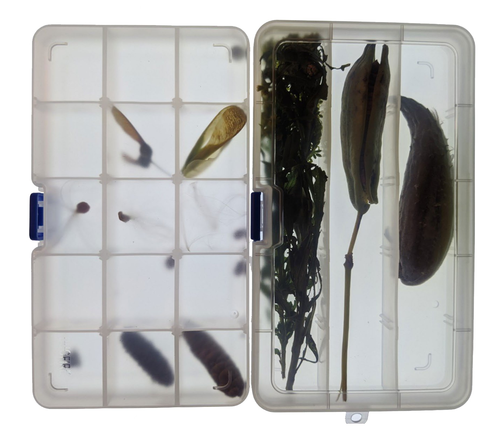
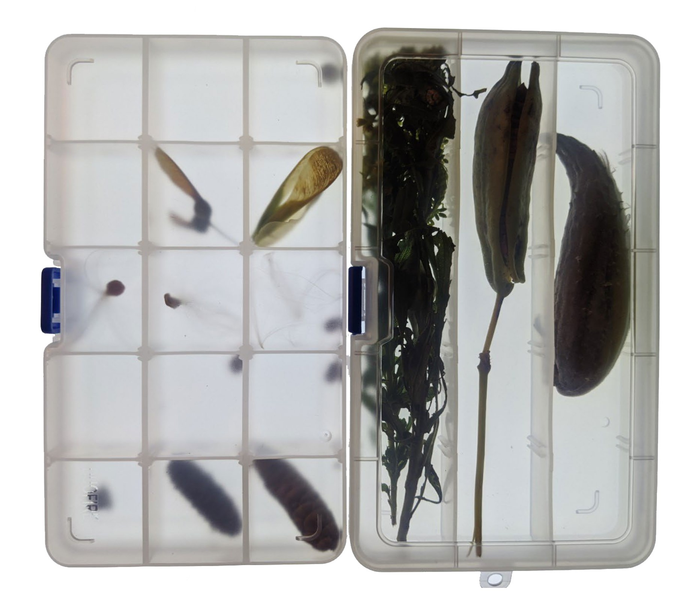

 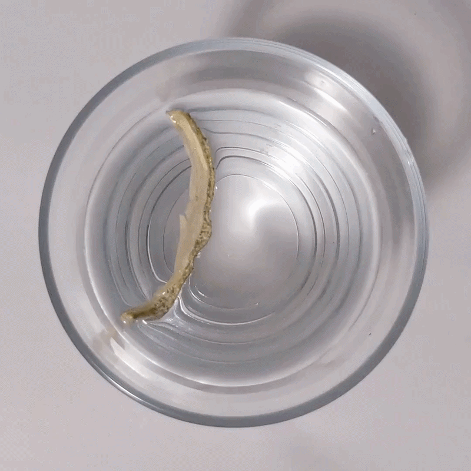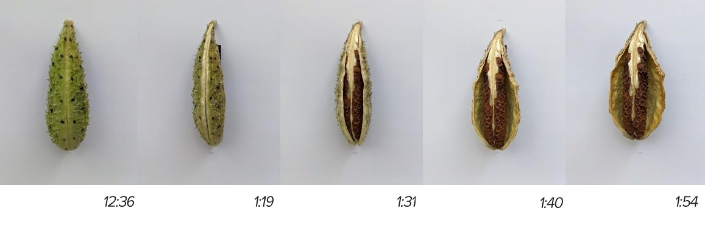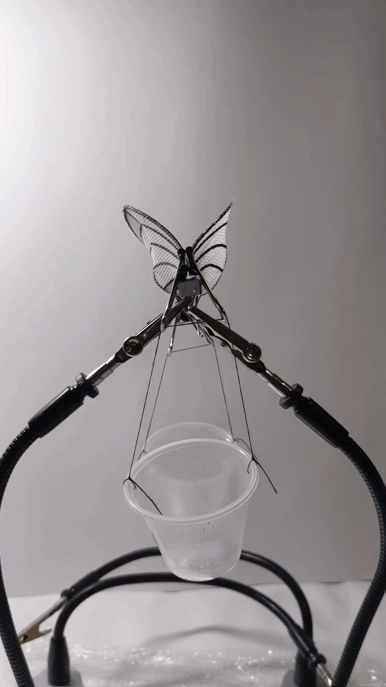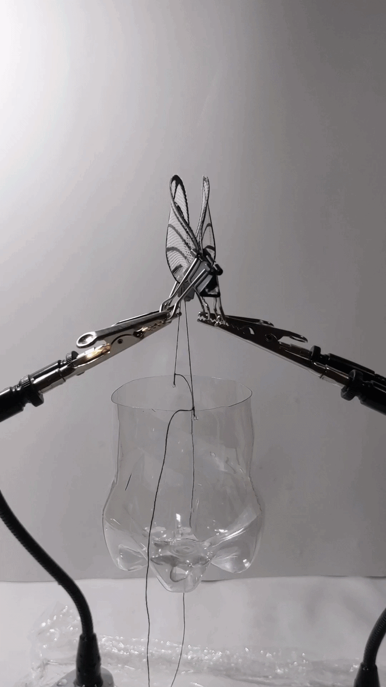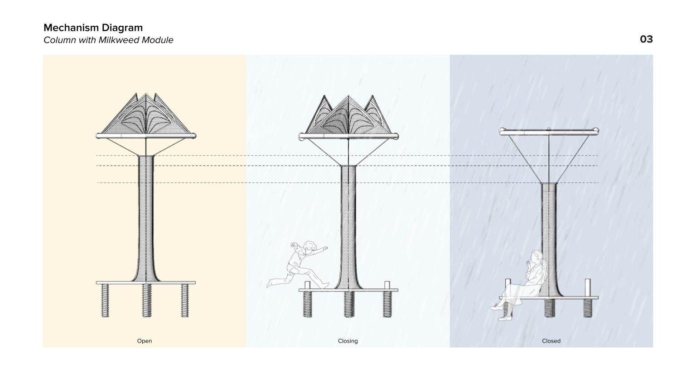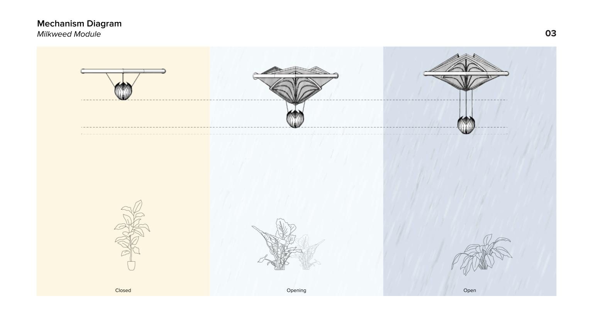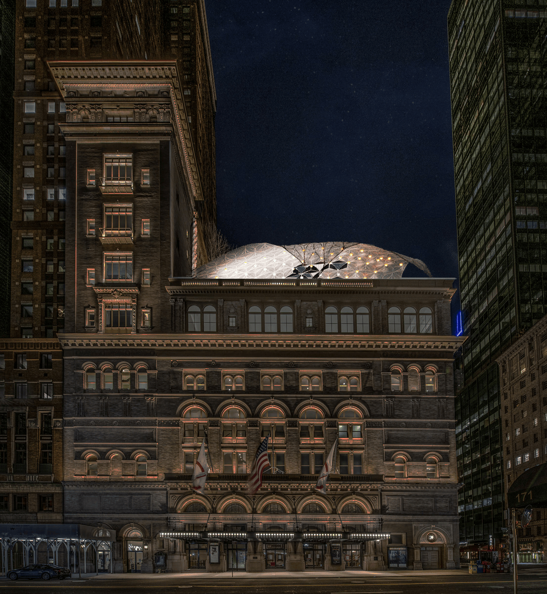
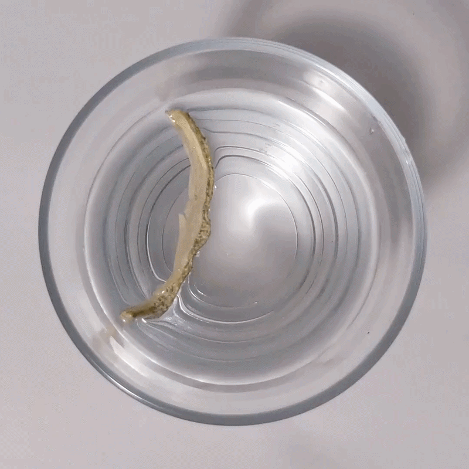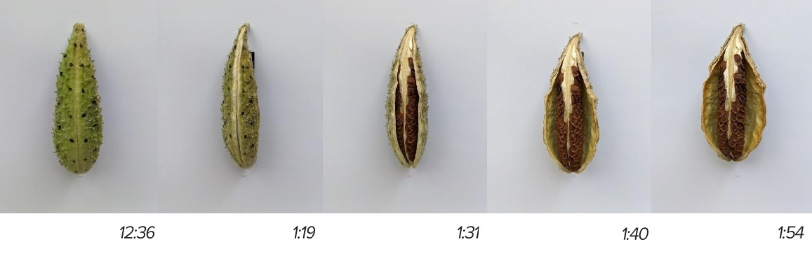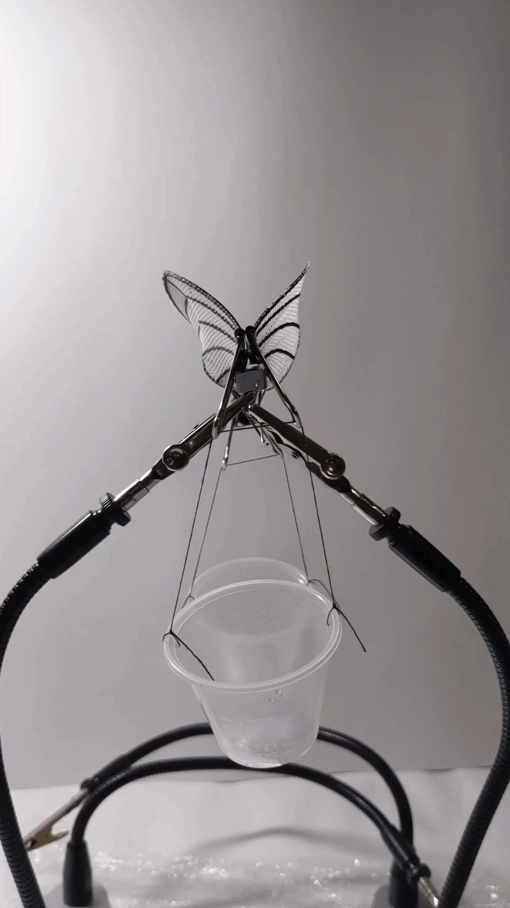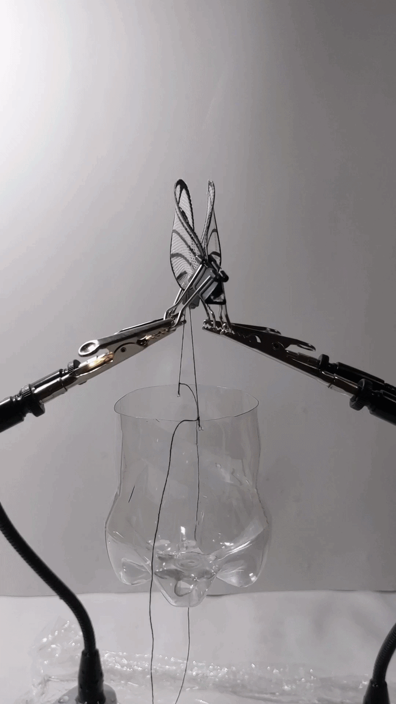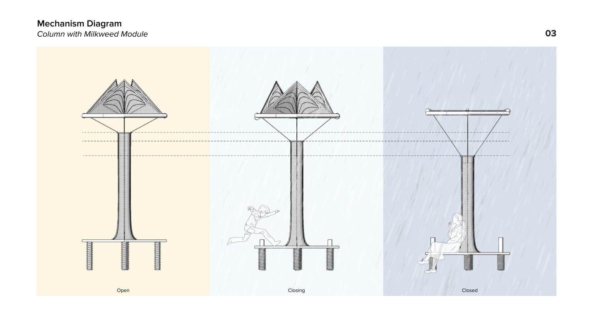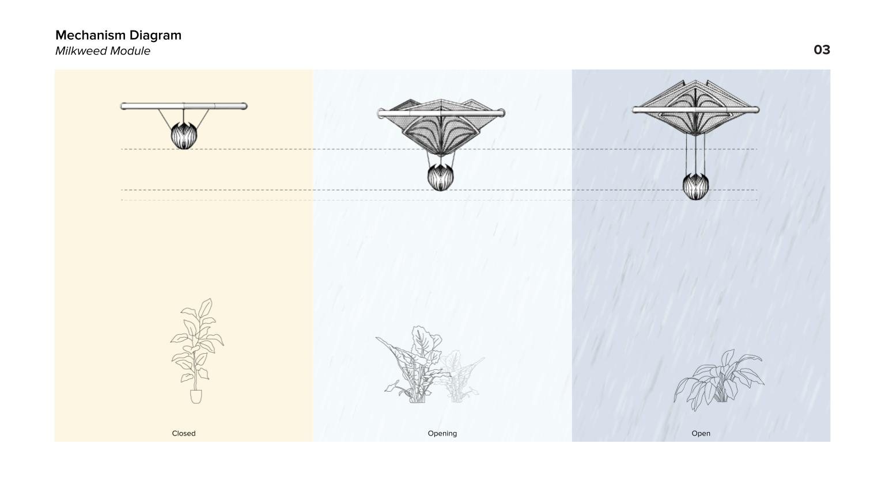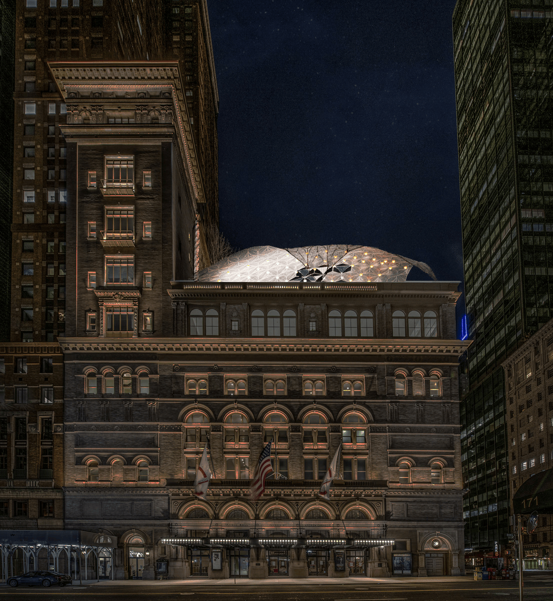

1/14